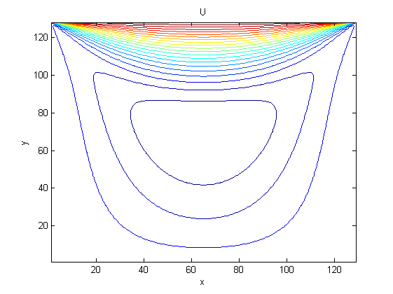

Test example 1
domain is [-1,1]^2, analytical solution is u = 20*x.*y.^3, v = 5*x.^4-5*y.^4, p = 60*x.^2.*y - 20*y.^3.
Contents
Step 1: Gauss-Seidel relaxation of velocity
Step 2: Distributive relaxation of velocity and pressue
k = 3; ite = zeros(k+1,1); time = zeros(k+1,1); for i = 3:k+3 n = 2^i; [uh, vh, ph, f1h, f2h, gh, uTop, uBot, vLef, vRig, uI, vI, pI, h] = dataStokes(n); [ite(i-2), time(i-2)] = testDGS(uh, vh, ph, f1h, f2h, gh, uTop, uBot, vLef, vRig, uI, vI, pI, h); end size = 2.^(3:k+3); size = size'; display('Table 1: DGS'); colname = {'#1/h', 'Time', 'Ite'}; disptable(colname,size,[], time,[], ite,[]); clear all
Table 1: DGS #1/h Time Ite 8 1.125 614 16 4.359375 2994 32 23.89063 13486 64 195.8125 57996
Step 3: Two level method
k = 3; ite = zeros(k+1,1); time = zeros(k+1,1); for i = 3:k+3 n = 2^i; [uh, vh, ph, f1h, f2h, gh, uTop, uBot, vLef, vRig, uI, vI, pI, h, width] = dataStokes(n); [uh, vh, ph, ite(i-2), time(i-2)] = Vcycle(uh, vh, ph, f1h, f2h, gh, uTop, uBot, vLef, vRig, h, width, 2); end size = 2.^(3:k+3); size = size'; display('Table 2: TwoLevel'); colname = {'#1/h', 'Time', 'Ite'}; disptable(colname,size,[], time,[], ite,[]); clear all
Table 2: TwoLevel #1/h Time Ite 8 0.953125 5 16 3.96875 6 32 17.4531 6 64 91.5625 7
Step 4: Vcycle multigrid method
k = 6; errVelL2 = zeros(k+1,1); errVelH1 = zeros(k+1,1); errVelInfi = zeros(k+1,1); errPreL2 = zeros(k+1,1); ite = zeros(k+1,1); time = zeros(k+1,1); for i = 3:k+3 n = 2^i; J = i-1; [uh, vh, ph, f1h, f2h, gh, uTop, uBot, vLef, vRig, uI, vI, pI, h, width] = dataStokes(n); [uh, vh, ph, ite(i-2), time(i-2)] = Vcycle(uh, vh, ph, f1h, f2h, gh, uTop, uBot, vLef, vRig, h, width, J); [errVelL2(i-2), errVelH1(i-2), errVelInfi(i-2), errPreL2(i-2)] = Error(uh, vh, ph, uI, vI, pI); end size = 2.^(3:k+3); size = size'; display('Table 3: Vcycle'); colname = {'#1/h', 'VelL2', 'VelH1', 'VelInfi', 'PreL2', 'Time', 'Ite'}; disptable(colname,size,[], errVelL2,[], errVelH1,[], errVelInfi,[], errPreL2,[], time,[], ite,[]); figure; showrate(width./size, errVelL2); h1 = legend('$ \frac {|| \mathbf{u}_I - \mathbf{u}_h ||} {|| \mathbf{u}_I ||}$','Location','southeast'); set(h1,'Interpreter','latex') figure; showrate(width./size, errVelH1); h2 = legend('$|| \nabla(\mathbf{u}_I - \mathbf{u}_h) ||$','Location','southeast'); set(h2,'Interpreter','latex') figure; showrate(width./size, errVelInfi); h3 = legend('$|| \mathbf{u}_I - \mathbf{u}_h ||_{\infty}$','Location','southeast'); set(h3,'Interpreter','latex') figure; showrate(width./size, errPreL2); h4 = legend('$ \frac {|| p_I - p_h ||} {|| p_I||}$','Location','southeast'); set(h4,'Interpreter','latex') clear all
Table 3: Vcycle #1/h VelL2 VelH1 VelInfi PreL2 Time Ite 8 0.052847 1.5412 0.30545 0.15633 0.921875 5 16 0.016915 0.82658 0.097917 0.061171 1.28125 7 32 0.0047945 0.36961 0.027544 0.020793 1.82813 8 64 0.0012709 0.14931 0.009239 0.0064934 2.70313 9 128 0.00032628 0.057011 0.0027491 0.0019212 5.54688 10 256 8.2556e-05 0.021077 0.00076806 0.00054843 15.1875 10 512 2.0754e-05 0.0076469 0.00020667 0.00015272 60.0781 11
Test example 2: Driven cavity problem
domain is [-1,1]^2, Stokes equation with zero Dirichlet boundary condition except on the top: { y = 1, -1 < x < 1 | u = 1, v = 0}.
n = 128; J = 6;
step = drivenCavity(n, J);
clear all
 Show location of variables
figureIndex;
clear all
Show the process of prolongation for U
Restriction is easy to implement with one index, one must consider different cases for prolongation.
figureProU;
clear all
Show the process of prolongation for V
figureProV;
clear all